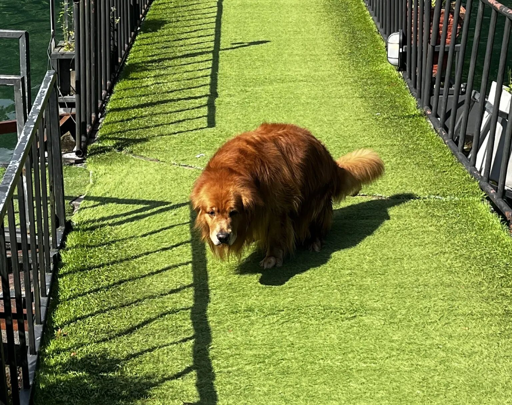
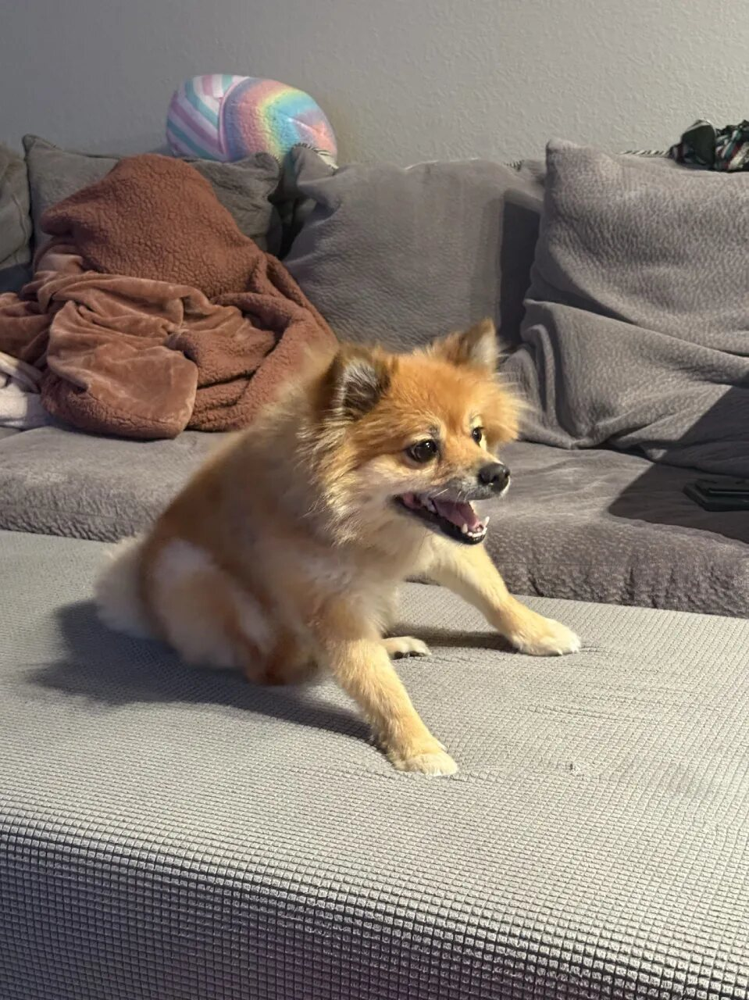

Six points track the spine and tail when the retriever begins crouching.
← Selected workCase study 07 / 09
Side project / Pose estimation + event logic
AI Dog PoopDetector
A USC side project inspired by one golden retriever, a 25-pound scooter, and too many careful exits through the front door.
- Product idea
- Recognize the behavior while the camera still knows the location
- How it works
- Six body points · motion · repeated-frame checks · OpenCV
- Tests
- False alerts · missed events · response time · location accuracy
Why I built this
Dodging daily lawn landmines led me to build a dog poop detector.
Look, you gotta picture my mornings back in college. I am walking out the front door every day just trying to get to class. But there was this one neighborhood golden retriever who decided my front lawn was his absolute favorite spot. The owners never picked up a single thing.
So I am out there doing literal ballet across the grass just trying to keep my sneakers clean. I knew I was going to have to pull the owners aside and talk to them about it. But I wanted to come prepared with the actual facts. That is exactly why I built a dog poop detector. I engineered a camera prototype that tracked the dog's posture to automatically pinpoint exactly where the mess was left behind.
Morning routeFront door to USC
Route scan active
Scooter25 pounds
Recurring visitorGolden retriever
Cleanup statusOverdue again
07:52 AM
Three cleanup zones detected. Dignity preserved. Class commute resumed.
Nearby frames confirm the posture and motion so an ordinary sit or stretch does not create an alert.
The prototype records the frame, time, and lawn location for the cleanup conversation.
Core insight
Dog waste changes shape, color, and visibility. A crouched spine, straight tail, and stationary pose form a more consistent signal.
possible event · checking more frames
REC14:32:08
Try the event loop
Possible event found
Run the detector to check several frames, confirm the event, and mark the cleanup location.
Event log waitingCleanup map waiting
Interactive threshold lab
Balance fast alerts with fewer mistakes.
Lower settings react faster but create more false alerts. Higher settings wait for more evidence and risk missing short events.
Simulated result
Balanced
- Estimated sensitivity
- 78%
- False-alert risk
- Medium
- Response
- 3.0 seconds
A clear view makes it easiest to find the dog's body points.
01
Why I tracked the dog’s pose
A pile might blend into the grass, sit behind the dog, or fall outside the camera frame. The dog’s crouched spine and tail position appear earlier and stay visible across several frames.
I tracked three points along the spine and three along the tail. The system also checked movement and duration. One uncertain frame never created a record by itself.
The finished prototype separated an ordinary sit or stretch from a sustained crouching event, then saved the time and cleanup location. The result gave me a clearer way to discuss the recurring problem with the owners.
02
DeepLabCut annotation inspector
Two frames, two model decisions
See how six body points become a decision.
Choose either photo. The confidence and posture results update immediately.
All 3 views shown

Possible target postureYard frameCurved spine · tail visible · body mostly still
- 1Spine front96%
- 2Spine middle94%
- 3Spine rear92%
- 4Tail base91%
- 5Tail middle89%
- 6Tail tip86%

Similar pose, no alertIndoor frameSimilar crouch · tail partly hidden · body moving
- 1Spine front90%
- 2Spine middle93%
- 3Spine rear95%
- 4Tail base54%
- 5Tail middle31%
- 6Tail tip18%
Spine-point confidence94%
Tail-point confidence89%
Body motionLow
Selected photo
Yard frame
The spine and tail points match the target posture. The system still checks several nearby frames before confirming the event.
Recent frames matching the target posture81%Above the 75% match threshold
The overlays show how the six-point system reads each photo. The percentages demonstrate the interface and do not represent measured production results.
01WatchRead one camera frame
02MarkFind six body points
03CompareCheck the posture across frames
04SaveLog the time and location
03
How the system works
Read the camera
Keeps the video connected and sends selected frames to the body-point model.
Find six body points
Marks three points along the spine and three along the tail without placing physical markers on the dog.
Check the behavior
Compares posture, movement, and time. One uncertain frame never sends an alert by itself.
Save the evidence
Records the time and location, saves a photo or short clip, and adds a cleanup marker.
04
Tests I completed
Different settings
Dogs, yards, and camera angles
I compared different body sizes, coat colors, backgrounds, and viewing angles.
Similar behaviors
Stretching, sitting, and digging
I used look-alike poses to find false alerts and improve the behavior rules.
Harder images
Low light and blocked body points
I checked daylight, low light, partial views, moving objects, and weak body-point confidence.
Privacy and control
Local processing and saved evidence
I separated video reading, detection, mapping, and alerts so each part had clear data limits.
The interactive numbers above illustrate threshold tradeoffs. They are not reported production performance.